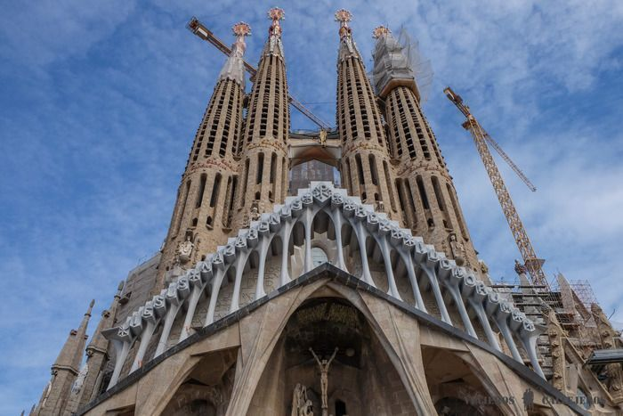
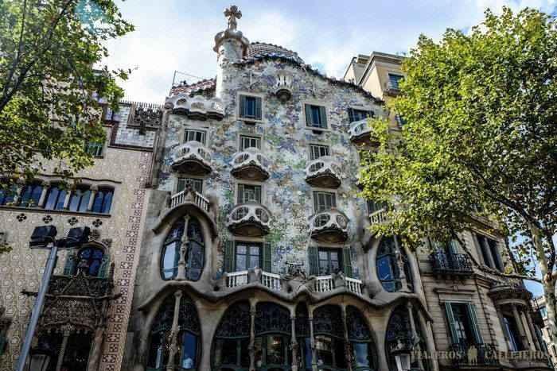

Barcelona es una ciudad española, capital de la comunidad autónoma de Cataluña, de la comarca del Barcelonés y de la provincia homónima.
Con una población de 1.620.343 habitantes en 2018, es la segunda ciudad más poblada de España después de Madrid, y la undécima de la Unión Europea. El área metropolitana de Barcelona, incluida en el ámbito metropolitano de Barcelona, cuenta con 5.029.181 habitantes (2011), siendo así la sexta ciudad de mayor población de la Unión Europea.
Se ubica a orillas del mar Mediterráneo, a unos 120 km al sur de la cadena montañosa de los Pirineos y de la frontera con Francia, en un pequeño llano litoral limitado por el mar al este, la sierra de Collserola al oeste, el río Llobregat al sur y el río Besós al norte. Por haber sido capital del condado de Barcelona, se suele aludir a ella con la denominación antonomástica de Ciudad Condal.
La historia de Barcelona se extiende a lo largo de 4000 años, desde finales del Neolítico, con los primeros restos hallados en el territorio de la ciudad, hasta la actualidad. El sustrato de sus habitantes aúna a los pueblos íberos, romanos, judíos, visigodos, musulmanes y cristianos. Como capital de Cataluña y segunda ciudad en importancia de España, la Ciudad Condal ha forjado su relevancia con el tiempo, desde ser una pequeña colonia romana hasta convertirse en una ciudad valorada internacionalmente por aspectos como su economía, su patrimonio artístico, su cultura, su deporte y su vida social.
En la actualidad, Barcelona está reconocida como una ciudad global por su importancia cultural, financiera, comercial y turística. Posee uno de los puertos más importantes del Mediterráneo y es también un importante punto de comunicaciones entre España y Francia, debido a las conexiones por autopista y alta velocidad ferroviaria. El aeropuerto de Barcelona-El Prat, situado a 15 km del centro de la ciudad, fue utilizado por más de 47,2 millones de pasajeros en 2017.
La Sagrada Familia
El Templo Expiatorio de la Sagrada Familia es la obra maestra inacabada del genial arquitecto Antoni Gaudí y el monumento más visitado de Barcelona.
Gaudí, máximo representante del modernismo catalán, cogió las riendas de la construcción de esta iglesia en 1883, de la que un año antes se había colocado la primera piedra, dejando a su muerte, en 1926 todos los planos para que futuros arquitectos pudieran finalizar la obra.
El interior y el exterior de La Sagrada Familia son una maravilla, nada comparable con otras iglesias del mundo, empleando Gaudí en ella toda su experiencia y nuevas técnicas , creando un estilo naturalista, donde todos sus elementos fluyen en completa armonía. En el exterior destacan las 3 fachadas dedicadas al Nacimiento, Pasión y Gloria de Jesús y las torres que llegarán hasta las 18 cuando se termine el monumento.
Hace poco se puso la fecha del 2026 como año de finalización de esta espectacular basílica católica, así que ya estamos impacientes, ya que cada día queda menos para ver La Sagrada Familia en su máximo esplendor.
Para visitar la iglesia te recomendamos ir a primera hora, ya que se forman largas colas y el cupo de entradas de diarias se agotan rápido. Una buena opción es reservar esta visita guiada con la que te asegurarás la entrada y además evitarás la espera en la cola.
También tienes la opción de subir a una de las torres y disfrutar de las vistas. En este caso puedes reservar esta visita guiada, que incluye la subida a la torre.
Horario de visita: todos los días de marzo a octubre de 9:00 a 20:00, los otros meses cierra a las 18:00.


Paseo de Gracia (Casa Batlló, La Pedrera)
El Passeig de Gràcia es la avenida más conocida y uno de los lugares que visitar en Barcelona más imprescindibles. Esta calle conecta la popular Plaza de Catalunya con el barrio de Gracia y destaca por sus edificios modernistas, restaurantes y sus tiendas de las marcas más famosas y lujosas.
Entre las joyas del modernismo catalán del Paseo de Gracia destaca la Casa Batlló, una de las obras maestras del genial Antonio Gaudí, declarada Patrimonio Mundial de la Unesco, y nuestro edificio favorito de la ciudad.
Al lado de Casa Batlló se encuentra la bonita fachada de Casa Amatller, cerca de la cual también se encuentran la Casa Mulleras y la Casa Lleó i Morera, obra de otro de los grandes arquitectos modernistas, Lluís Domènech i Montaner.
La Casa Milà o La Pedrera, es otro de los edificios increíbles que hizo Gaudí en esta calle y que también merece una visita, sobre todo su azotea. Otros edificios del Passeig de Gràcia a los que merece la pena prestar atención son la Casa Enric Batlló, la Casa Bonaventura Ferrer, el Palau Malagrida y el Palau Robert.
Una gran opción para conocer la obra de Gaudí, uno de los mejores arquitectos de la historia y evitar perder tiempo es reservar este tour que incluye la entrada sin colas en la Casa Milá, La Pedrera, la Sagrada Familia y el Park Guell.
Horario de visita Casa Batlló: todos los días de 9:00 a 21:00. Reservar entrada sin colas aquí. Entrada incluida en el Barcelona Pass.
Horario de visita Casa Milá: todos los días de 9:00 a 21:00, de marzo a octubre cierran a las 18:30. Reservar entrada sin colas aquí. Entrada incluida en el Barcelona Pass.